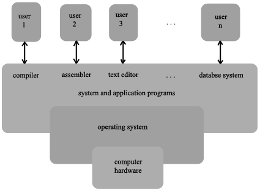
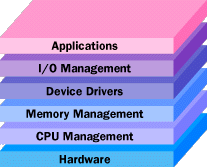
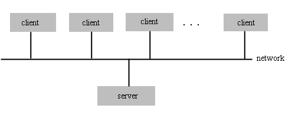
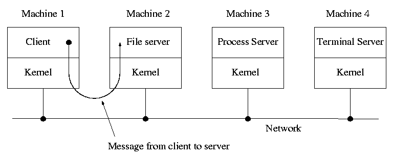

Introduction
Lecture-1
Operating Systems (CS330)
Lecturer: Deepak Gupta
Notes prepared by: Utsav Maitra
Lecture Date: July 29, 2004
Contents
What is an Operating System?
An Operating System (OS) is the software that enables the execution of all the programs that we use. Its primary goal is to provide convenience for the user, and it arose as a solution to the following problems:
- It is difficult and tedious to program on a bare machine, especially to interact with the hardware time and again for I/O operations, etc.
- Also, if a machine has more than one user working on it, then security and efficiency issues make it useful to have an Operating System on it.
However, it is easier to define an Operating System by what it does than by what it is, and an Operating System basically does two things:
- It manages the hardware and software resources of the computer system. These include things like the Processor, Memory, Disk Space, etc. This is important as many programs and input methods compete for the attention of the CPU.
- It provides a stable and consistent way for applications to deal with hardware without having to know all the hardware details. This is especially important if the application programs are expected to operate on more than one type of computer hardware.
An Operating System is commonly seen as a resource allocator: It manages the various hardware and software resources of the computer like CPU time, memory space, I/O devices, etc. and allocates them among various programs and users according to certain system goals. These include goals like convenience and efficiency which can sometimes be contradictory. Earlier, efficiency would tend to be more important than convenience, but nowadays convenience for the user tends to be more important (Due to the falling costs of computers and the rising costs of labour.).

Abstract View of the Components of a Computer System

Specific tasks of an Operating System tend to fall in the following categories:
- Processor Management.
- Memory Management.
- Device Management.
- Storage Management.
- Application Interface.
- User Interface.
Some examples of Operating Systems:
- Linux.
- Windows XP.
- VMS.
- OS/400.
- AIX.
- z/OS.
Useful Links For This Section:
Back To Contents
How does the Operating System affect an Application Programmer?
The primary impact of Operating Systems on application programmers is in the areas of security and efficiency . For example, some code can be considerably optimised by rewriting it in a way that exploits the functioning of the OS.
Eg. Consider this piece of code:
int A[M][N], B[M][N], C[M][N];
...
for (int j = 0; j < N; j ++)
{
for (int i = 0; i < M; i ++)
{
C[i][j] = A[i][j] + B[i][j];
}
}
(M and N are reasonably large numbers)
Reversing the order of the loops here considerably increases the efficiency of the program as C stores arrays in row-major format. So on interchanging the loops' order, when fetching an array element into the cache, the elements that will be required immediately afterwards are also fetched (as being in the same row, their addresses are near to that of the address being fetched currently). This reduces the time taken to fetch them, as compared to that in the current loop, where this advantage is lost (as addresses are being accessed column-wise and adjacent elements in the same column are often located very far apart in memory).
This phenomenon, seen here in cache memory, is also seen on a much larger scale in virtual memory.
Back To Contents
Operating systems as Abstractions: Operating Systems and Compilers
At an abstract level, the role of both a Compiler and an Operating System is similar: Both provide abstractions.
A compiler abstracts the instruction set of a processor, registers and memory locations.
High Level Language Abstractions
| Object | Abstraction
|
| Registers and Memory Locations | Variables
| Condition Codes, Arithmetic/Logic Instructions | Operators
| | Branch Instructions | If-Then-Else Loops (Structural Constructs)
| |
Similarly an Operating System also offers abstractions: The programmer can worry about the application part of the program instead of worrying about more mundane matters like how to interact with specific kinds of hardware.
OS Abstractions
| Object | Abstraction
|
| Storage Devices | Files and Directories
|
| Memory | Virtual Address Space
|
| Processor (CPU) | Thread
|
| Computer | Process
|
Back To Contents
Resource Sharing
A computer can be viewed as a container of a CPU, memory, storage devices, etc.
Similarly, a process can be viewed as a container of the abstractions of these physical objects.
eg. Inside a computer, many processors may be present.
Similarly, a process may be running many threads by time-sharing.
In this way, physical resources are shared by many abstractions.
This sharing can be of two kinds:
This resource sharing between abstractions is done by an Operating System. This is convenient because when a program is running on a computer, it does not have to take into consideration the other programs that may be running on the same computer. Each program can pretend that it owns the whole computer. Otherwise the code for dealing with the other programs could make the program's code unwieldy and unportable.
In resource sharing, the following things have to be taken into account:
- The resources must be shared efficiently.
- This sharing must be secure :
- No user should be allowed to violate the rights of others by taking undue processor time or undue disk space, etc.
- No user should be able to read from or write to another user's data without that user's permission.
Even on single user systems, security is essential so that users cannot harm themselves unintentionally. eg. If there is an error in a proram written by a user, it should not affect the whole computer. The damage caused due to it should be kept from spreading.
Useful Links For This Section:
Back To Contents
System Calls
As we know, an OS has many functions, like organising the memory into files, etc. But it is not enough for it to tell the user that the memory is divided into files. To enforce this kind of organisation and to simplify I/O operations, etc. it provides functions for reading files, creating and deleting them, etc. In this way an OS can be viewed as a library of useful functions. These are called System Calls.
In other words, a System Call is the mechanism used by an application program to request a service from the operating system.
But the OS as a library is different from the libraries that are available in C, Java, etc. as those libraries are merely a convenience while the OS as a library is forced upon the user.
For example, if you want to use the StringTokenizer class in Java, then you are free to do so. But you can also decide not to use the library functions in it, and instead include its functionality in your own code. On the other hand, the OS not only provides the facility to read from files, but also ensures that the only way for the programmer to access the hardware resources is through the OS (by using system calls).
This is needed because if, for example, programmers are allowed to directly perform disk I/O, then they can also access or modify the files of other users without permission. This would compromise the security of the system, and thus cannot be allowed. Therefore, any access to a hardware resource must be mediated by the operating system.
Useful Links For This Section:
Back To Contents
The Evolution of Operating Systems
- Pre-History: The earliest computers did not have software. Their functionality was hardwired. To reprogram the machine required hardwiring. These machines did not have an operating system.
- User Setup and Breakdown: Computers were scheduled around the clock and users had to come in at their scheduled times. In addition to loading their programs, the users had to load (and link, if necessary) any system software, such as compilers and device drivers, needed for their run. Also, additional work was needed to make the machine available for the next user.
- Operator Controlled Machines: Soon it became clear that during the rather lengthy setup and breakup time, the comupter was not doing any useful work. This waste of resources had to be remedied. A computer operator was put in charge of the machine. Users submitted their programs on punch cards. The operator scheduled job execution, loaded the programs, collected the output and performed any required setup operations. By running jobs with similar system requirements in the same time frame, the setup and breakdown process was streamlined. Jobs could also be arranged by priority, run-time and other criteria.
- Simple Batch Systems: To further reduce the amount of time when the computer did no work, the scheduling and loading functions were turned over to a program called the monitor (called the resident monitor, if it stayed in memory at all times). These were the first operating systems. Users submitted short instructions in a language called JCL (Job Control Language) to aid the monitor in its task. Jobs were grouped together and run in batches. Often a separate computer was used for I/O operations. Hardware features like memory protection, timers, privileged instructions and interrupts were added to machines during this stage of development.
- Multi-Programmed Batch Systems: These came next. Multiprogramming increases CPU utilization by organising jobs so that the CPU always has something to execute. The OS keeps many jobs in memory simultaneously. This set of jobs is a subset of jobs kept in the job pool. (The number of jobs that can be kept simultaneously in memory is usually much smaller that the number of jobs that can be kept in the job pool). In a non-multi-programmed system when the CPU has to wait for some task, like an I/O operation, it sits idle. In a multi-programmed system, in a similar situation, it switches to another system, and thus it never sits idle. Multi-programmed systems were the first operating systems where the OS had to make decisions for the user(s). (What program to execute out of many possible programs). This it did by job-scheduling. In multi-programmed systems, many jobs running require:
- Some form of memory management.
- That the ability of various jobs to affect each other be limited in all phases of the operating system, including process scheduling, disk storage and memory management.
- Interactive Systems: As computers became cheaper, the programmers' and users' time became an important commodity. The importance of good response time and short turnaround time were factored in the OS design process by providing direct interaction between the user and the system. They initially consisted of dumb terminals connected together. Interactive systems also evolved:
- Uniprogrammed Systems: A uniprogrammed system can only handle one program at a time. This is more convenient for the operating system builder as he/she gets rid of concurrence by defining it away. But it is harder for the user, who can't work while waiting for a print-out, for example. MS-DOS is the best-known among such systems.
- Multi-Programmed Systems: The wedding of the personal computer to multiprogramming resulted in extremely useful computer systems. The user could run several processes at at one time, doing useful work with one program while waiting for another program to complete its task. The user could also run operations which require two programs to run simultaneously, e.g. copy text from a web page and paste it into a word processing document.
Multi-Programming was implemented in Windows 3.1, but in it, while we could have many windows open, the one which had the focus was the only one whose process was actually being executed. From Windows 98 onwards Windows implemented true multi-programming with many applications running at a time.
- Multi-User Systems: These allow more than one user to work on a system. This highlights security issues. eg. Software installation should only be possible for an administrator or someone with administrator privileges. On many systems, however, personal accounts have such privileges so that users can install software for their private use. However, disk space is saved by avoiding multiple instances of the same program whenever possible. When copies of programs are available for everyone on the system, individuals are responsible for agreeing to any restrictions placed on programs they use. eg. UNIX is a multi-user system.
- Real-Time Systems: These not only give results to the user, but also give guarantees about the worst-case time in which these results will be achieved. These are generally used in interactive control systems, etc. where processing must be done within the specified time constraints, or the system will fail.
A real-time system is used when rigid time requirements have been placed on the operation of a processor or the flow of data; thus, it is often used as a control device in a dedicated application. eg. Systems that control scientific experiments, medical imaging systems, industrial control systems, and certain display systems.
Importance of Real-Time Systems: In some cases, if the processing is not completed within certain time constraints, it is as good as not completed at all. Consider a robot arm building a car. If it is instructed to halt after it crashed into it, then the instruction is useless.
Real-time systems come in 2 flavours:
- Hard Real-Time Systems: These guarantee that critical tasks be completed on time. So they have the following features:
- All delays on the system need to be bounded, from retrieval of stored data to the time it takes to finish any request made to it.
- Secondary storage of any sort is usually missing or at least limited. Data is stored in short-term memory or in Read Only Memory (ROM).
- Most advanced OS features like virtual memory etc. are missing as they tend to separate the user from the hardware. This leads to uncertainty in the amount of time taken by an operation.
- Soft Real-Time Systems: A critical real-time task gets priority over other tasks.
- This can be mixed with other kinds of systems.
- The OS kernel delays still need to be bounded: A real-time task cannot be kept waiting indefinitely.
- Unlike hard real-time systems, they are risky to use for industrial control and robotics, where deadlines must be met strictly.
- But they are more useful in areas like multimedia, virtual reality, and advanced scientific projects like undersea exploration and planetary rovers. This is because these need advanced operating system features that cannot be supported by hard real-time systems.
- Distributed Systems: In these, many computers work together, giving the user the picture of a single system. They depend on networking for their functionality. Being able to comunicate, distributed systems are able to share computational tasks, and provide a rich set of features to users. These are of various kinds:
- Client-Server Systems: As PCs have become faster, more powerful, and cheaper, designers have shifted away from the centralised system architecture. Terminals connected to centralized systems are now being supplanted by PCs. So interfacing with users, instead of being done directly by centralised systems, is being handled by the PCs. Centralised systems today act as server systems to satisfy requests generated by client systems.

General Structure of a Client-Server System
Server systems can be broadly classified as:
- Compute Server Systems: These provide an interface to which clients can send requests to perform an auction, in response to which they execute the action and send back requests to the client.
- File Server Systems: They provide a file-system interface where clients can creat, update, read, and delete files.
- Distributed Systems (Loosely Coupled Systems): The computer networks used in these applications consist of a collection of processors that do not share memory or a clock. Instead, each processor has its own memory. The processors communicate with each other through various communication lines, such as high-speed buses or telephon lines.

A Distributed Client-Server System
- Network Operating Systems: These have taken the concept of networks and distributed systems further than the notion of providing network connectivity. These provide featires like file sharing across the network, and allow different processes on different computers to exchange messages with each other. A computer running a network operating system acts autonomously from all other computers on the network, although it is aware of the network and is able to communicate with other networked computers.
- Clustered Systems: They gather together multiple CPUs to accomplish computational work. They differ from parallel systems in that they are composed of two or more individual systems coupled together.
The definition of the term clustered is not concrete, but the generally accepted definition is that clustered computers share storage and are closely interlinked via LAN networking.
Clustering is usually done to provide high availability. Each node can monitor one or more of the others over the LAN. If the monitored machine fails, the monitoring machine can take ownership of its storage, and restart the applications that were running on the failed machine. This works in two modes:
- Asymmetric Clustering: In asymmetric clustering, one machine is in hot standby mode and the other is running the applications. The hot standby host (machine) does nothing but monitor the active server. If that server fails, the hot standby host becomes teh active server.
- Symmetric Clustering: In symmetric mode, two or more hosts are running applications, and they are monitoring each other. This mode is more efficient, as it uses all the hardware. But it requires thatmore than one application be available to run.
- Handheld Systems: These are limited in size. So they have a small amount of memory, slow processors and small display screens. Thus, they must manage memory more efficiently. and applications must be designed to not task the processor.
We are mainly concerned with multi-user, multi-programmed systems like UNIX, Linux in particular.
Feature Migration:
Features once available only on mainframes have been adopted on microcomputers. The same concepts are appropriate for the various classes of computers: mainframes, minicomputers, microcomputers, and handhelds. For example, MULTICS was developed as a computing utility that operated on a large, complex mainframe computer (the GE645). Many of its ideas were used for the development of the UNIX operating system, initially designed for a PDP-11 minicomputer around 1970. Around 1980, the features of UNIX became the basis for UNIX-like operating systems on microcomputer systems, and they are being included in more recent operating systems such as Microsift Windows NT, IBM OS/2, and the Macintosh operating system.
Useful Links For This Section:
Back To Contents
Other Useful Links :
Back To Contents